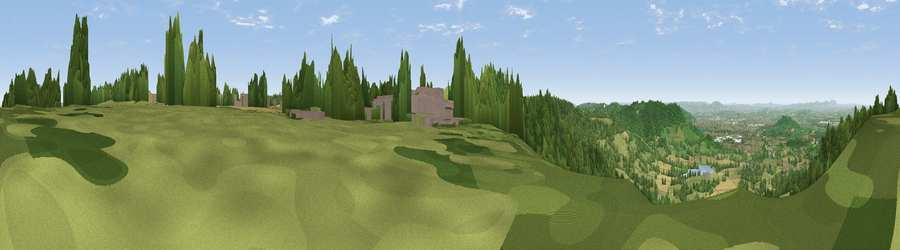

Viewpoint near Birdlip
#8279 in England · top 19% of its area beats it · near Birdlip · path 67 mWhere it is
The exact computed spot (SO 92525 14575). Click the marker for map links.
Public access: the nearest public right of way is about 67 m away — the final stretch may cross private land. Computed from Natural England's CRoW access layer and OpenStreetMap rights of way — not the legal definitive map. Always verify locally.
The view, rendered

A 360° render of this exact spot computed from the terrain model, tree cover and land cover — summer colours, afternoon light, calibrated against photographs of famous viewpoints. Real trees, hedges and buildings will differ in detail.
The panorama
Grey silhouette: terrain skyline in each direction (720 bearings, Earth curvature and refraction included). Dashed green: skyline with trees (+15 m) and buildings (+8 m) as obstacles. Blue strip: how far the ground is visible on each bearing.
Where the view opens
Wedge length = distance to the farthest visible ground on that bearing (vegetation-aware). Rings at 10, 25 and 50 km.
What fills the view
51% woodland · 39% grassland · 7% cropland · 3% built-up
Angular shares of the visible panorama (visual magnitude), not map area. Landscape diversity 0.45 (0–1 Shannon).
Key numbers
More beautiful places nearby
The staircase of upgrades: each row has a higher view potential than everything closer. Driving times are estimates from straight-line distance, calibrated against real road routing — check an actual route before setting out.
| Place | Direction | Drive | Score |
|---|---|---|---|
| Birdlip Hill | SSW · 0 km | ~2 min | 71.7 |
| Viewpoint near Witcombe | N · 2 km | ~4 min | 72.2 |
| Viewpoint near Great Witcombe | W · 3 km | ~8 min | 80.5 |
| Nottingham Hill | NNE · 15 km | ~27 min | 80.9 |
| Viewpoint near Bredon's Norton | N · 25 km | ~41 min | 81.3 |
| Bredon Hill | N · 26 km | ~42 min | 83.0 |
| Millennium Hill | NNW · 30 km | ~47 min | 86.9 |
| Worcestershire Beacon | NNW · 34 km | ~52 min | 87.1 |
51.82974, -2.10987 · source: screening · position refined by local search. Computed location — check access rights before visiting.